원자력기사 (2005-05-29 기출문제)
1과목: 원자력기초
1. 동력로의 출력은 출력의 크기에 따라 선원 영역(source range), 중간 영역(intermedi- ate range) 및 출력 영역(power range) 등 셋으로 분류하여 측정된다. 이 중 비례 계수관(proportional counter)이 이용되는 영역은?
- 선원영역
- 중간영역
- 출력영역
- 중간영역 및 출력영역
(정답률: 알수없음)

2. 원자로 보호계통과 관련된 사항으로 구성된 항은?
- DNBR, ΔT Trip, 가압기 압력
- LOCA, 펌프 trip, Condenser 고장
- RCP펌프 trip, LOCA, ΔT Trip
- 증기관 파열, 펌프 trip, LOCA
(정답률: 알수없음)
3. 다음 중에서 중성자의 에너지가 가장 큰 것은?
- 정지 중성자가 1MeV 양자와 충돌후 가질 수 있는 최대 에너지
- 열중성자에 의한 U235핵분열시 생성되는 즉발중성자의 평균에너지
- 열중성자에 의한 U235핵분열시 즉발 중성자중 생성되는 확률이 가장 큰 중성자에너지
- 열중성자에 의한 U235핵분열시 생성되는 지발중성자의 평균에너지
(정답률: 알수없음)
4. U-235로 만든 핵연료봉 하나를 물속에 넣었을 때 중성자속을 가장 적절하게 표시한 그림은? (단, φ1: thermal neutron flux φ2: fast neutron flux)
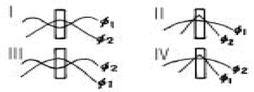
- Ⅰ
- Ⅱ
- Ⅲ
- Ⅳ
(정답률: 알수없음)
5. 천연 우라늄에 U-235이 0.71% 포함되어 있다. 단위체적당 U-235의 원자수는 얼마인가? (단, 아보가드로수 = 6.02x1023, 우라늄비중 = 19.1g/㎝3)
- 4.3x1021atoms/㎝3
- 3.4x1020atoms/㎝3
- 9.5x1017atoms/㎝3
- 1.9x1017atoms/㎝3
(정답률: 알수없음)
6. 자연우라늄-graphite 원자로에서 f = 0.83, 감속재의 확산거리 Lm = 50㎝일 때 임계 계산을 위한 확산거리 L의 값은 대략 얼마인가?
- 8.5㎝
- 20.6㎝
- 50.0㎝
- 100㎝
(정답률: 알수없음)
7. Fission Chamber에 관한 설명으로 적합하지 않은 것은?
- 90% 이상의 U-235로 농축된 U3O8으로 Chamber 내부에 coating한다.
- U-235의 핵분열을 이용한 중성자 측정 원리이다.
- 중성자와 U-235의 핵융합을 이용한 원리이다.
- 검출기의 전류 출력이 중성자속에 비례하는 것을 이용한 것이다.
(정답률: 알수없음)
8. 방사붕괴중 질량수 200이상의 중원소 붕괴에서 흔히 볼 수 있는 유형은?
- 알파(α) 붕괴
- 베타(β) 붕괴
- 감마(γ) 붕괴
- 중성자방출 붕괴
(정답률: 알수없음)
9. 원자로의 핵연료봉만을 직경이 작은 것으로 교체하고 원자로의 출력은 그대로 유지하려 한다. 이 때 핵연료봉의 선출력(linear power rate)은 어떻게 변하겠는가? (단, 핵연료봉의 총 갯수는 변함 없음.)
- 초기에 증가하나 점차 감소한다.
- 증가한다.
- 감소한다.
- 변화없다.
(정답률: 알수없음)
10. 원자로의 출력계산에 사용되는 신호를 얻을수 있는 것은?
- 붕산농도
- 제어봉 위치
- 노심계측 계통
- 노외계측 계통
(정답률: 알수없음)
11. 로재료의 구비조건을 열거한 것으로 적당하지 않은 내용은?
- 감속재는 중성자 흡수단면적이 작을 것
- 제어재는 중성자 흡수단면적이 클 것
- 냉각재는 중성자 흡수단면적이 작을 것
- 반사재는 중성자 흡수단면적이 클 것
(정답률: 알수없음)
12. 열효율이 높은 이상적인 카르노사이클(carnot cycle)에서 저온과 고온의 온도가 각각 50℃, 250℃일 때 열효율은?
- 38%
- 80%
- 56%
- 45%
(정답률: 알수없음)
13. PCM(Percent - Mill)의 단위는?
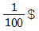
- 10-5ρ
- 10-2ρ
- 10-3ρ
(정답률: 알수없음)
14. 증기 발생기의 증기관이 파열되는 경우 원자로 거동은?
- 출력이 떨어진다.
- 출력이 증가한다.
- 출력은 변화 없다.
- 출력은 감소할 수도 있고 증가할 수도 있다.
(정답률: 알수없음)
15. 핵연료 소결체 표면온도가 650℃이며 평균 선출력이 560W/㎝일 때, 핵연료 소결체의 중심부 온도는? (단, 핵연료 소결체의 평균열전도도(TRg) = 0.033W/㎝℃)
- 약 2000℃
- 약 1350℃
- 약 1854℃
- 약 1665℃
(정답률: 알수없음)
16. 고속증식로에 관한 설명중 옳은 것은?
- LMFBR은 Sodium-Sodium 열교환기가 사용된다.
- 감속재로 Sodium이나 Helium을 사용한다.
- 열효율이 가압경수로(PWR)와 유사하다.
- 핵분열을 일으키는 중성자 에너지가 대부분 1keV∼100keV 사이이다.
(정답률: 알수없음)
17. 62Sm 핵의 질량 151.919756, 63Eu 핵의 질량 151.921749, 64Gd 핵의 질량이 151.919794amu라 할 때 일어날 수 있는 반응이 아닌 것은?
- β-decay(Eu × Gd)
- Electron Capture(Gd × Eu)
- Electron Capture(Eu × Sm)
- β+decay(Eu × Sm)
(정답률: 알수없음)
18. 원자로의 긴급정지시에 사용되지 않는 반응도 제어 수단은?
- burnable poison rod
- chemical shim(soluble poison)
- control rod
- safety rod
(정답률: 알수없음)
19. Geiger의 법칙에 의하면 표준상태의 공기중에서 α입자의 평균비정(mean flight range)은 어떻게 되는가?
- α입자의 속도의 제곱에 비례한다.
- α입자의 속도 세제곱에 비례한다.
- α입자의 속도의 제곱근에 비례한다.
- α입자의 속도의 세제곱근에 비례한다.
(정답률: 알수없음)
20. 집속(collimation)된 방사선을 이용하여 물질의 두께에 따르는 투과 실험에서 그림과 같은 흡수곡선을 얻었다. 이 방사선의 종류는?(단, N는 투과방사선의 강도이다.)
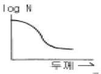
- α선
- β선
- γ선
- 중하전입자선
(정답률: 알수없음)
2과목: 핵재료공학 및 핵연료관리
21. 핵연료 피복관의 결함을 진단하기 위하여 분석되는 원소로 인체의 갑상선에 매우 유해하며, 연료의 연소중 생성되는 물질은?
- I
- Cs
- U
- Pu
(정답률: 알수없음)
22. 재래의 식품처리 기술과 비교하여 방사선처리 기술의 특징은?
- 처리시 열이 발생하여 살균의 상승작용을 나타낸다.
- 음식물에 방사선이 잔류하여 장기간 보관후 식용으로 사용할 수 있다.
- 포장이후에 처리할 수 있어 재현성이 좋다.
- 특정한 영양분이 많이 파괴되므로 이 분야에는 사용할 수 없다.
(정답률: 알수없음)
23. 3% 농축된 우라늄 1kg을 얻기 위하여 천연우라늄 몇 kg이 필요한가?(단, Tail assay는 0.20 W/o로 간주한다.)
- 4.2
- 5.5
- 7.4
- 12.4
(정답률: 알수없음)
24. 다음 중 원자로 제어봉의 재료로서 적합하지 않는 것은?
- B
- Cd
- Hf
- Au
(정답률: 알수없음)
25. 우라늄 산화물중 1000℃이상에서 존재하지 않는 산화물은?
- UO2
- U3O7
- UO2+x
- U4O9
(정답률: 알수없음)
26. UO2핵연료 소결체의 이론적 밀도(TD)는 10.96g/㎝3이다. 농축도가 3.2%이고 밀도가 95%TD인 핵연료 소결체에서의 U235의 원자 밀도[atom/㎝3]는?
- 7.4x1020
- 9.8x1020
- 2.3x1022
- 8.4x1022
(정답률: 알수없음)
27. 중성자 제어재의 특성중 옳지 않는 것은?
- 강한 중성자 흡수단면적
- 높은 내부식성 및 내마모성
- 높은 중성자 산란단면적
- 적은 질량의 재료
(정답률: 알수없음)
28. 핵분열 생성물의 이산화우라늄 핵연료내에서의 물리적 상태를 틀리게 말한 것은?
- Y, 희토류원소 : 격자안에서의 산화물
- I, Te : 기화물
- Ph, Pd : 이상질의 산화물
- Xe, Kr : 일원자 기체
(정답률: 알수없음)
29. 압력용기의 외경 4.2m, 두께 0.2m, 내부압력이 15MPa이다. 두께가 외경에 비해 매우 적어 원주응력이 압력용기 표면으로부터 깊이에 상관없이 균일하다면 이 원주응력의 크기는 몇 MPa인가?
- 143
- 285
- 1,430
- 2,850
(정답률: 알수없음)
30. 경수로의 냉각재로서 적합한 것은?
- 중성자 흡수단면적이 적고 열전달율이 좋은 물질
- 중성자 산란단면적이 적고 밀도가 큰 물질
- 중성자 흡수단면적이 크고 내부식성이 좋은 물질
- 중성자 산란단면적과 점성이 큰 물질
(정답률: 알수없음)
31. 가압 경수로의 압력용기(Pressure Vessel)는 다음 중 어떤 재료인가?
- 탄소강(Silicon Carbon Steel)
- Zircaloy
- Inconnel
- Stainless Steel
(정답률: 알수없음)
32. 다음은 U, UO2, UC의 각 재료를 상온에서의 물리적 특성값이 높은 순서대로 적은 것이다. 옳은 것은?
- 열전도도 : U, UO2, UC
- 전기전도도 : UC, U, UO2
- 핵분열물질 밀도 : U, UC, UO2
- 밀도 : UC, U, UO2
(정답률: 알수없음)
33. 밀봉선원 제조시 밀봉선원의 누설시험방법과 관계가 없는 것은?
- 기포시험
- 충격시험
- 85Kr시험
- 침적시험
(정답률: 알수없음)
34. C-14 연대 측정에서 가장 많이 쓰이는 탄소 화합물은?
- CO2
- CH4
- C2H5OH
- C2H2
(정답률: 알수없음)
35. 다음 중 상온에서 열전도도(thermal conductivity)가 가장 높은 재료는?
- Zircaloy-2
- Aluminum Alloy
- Inconel
- Low Carbon Steel
(정답률: 알수없음)
36. 핵연료의 형태와 그에 해당되는 성분을 나열한 것으로 틀린 것은?
- 금속 : Pu, U, Th
- 도성합금 : U-Al, U-Mo
- 세라믹 : UO2, PuO2, ThO2
- 액체 : UO2SO4, UO2(NO3)2
(정답률: 알수없음)
37. 금속이 고속 중성자속(E > 1 MeV)에 조사되면 금속 조직내에 여러가지 조사결함이 생성되며 이 결함들은 조사 효과를 일으켜 원자로 재료에 중요한 영향을 미치게 된다. 다음 중 조사 효과가 아닌 것은?
- 조사경화(Irradiation Hardening)
- 조사취화 및 파단(Embrittlement and Fracture)
- 팽윤(Swelling) 및 조사크리프(Irradiation Creep)
- 활성화 분극(Activation Polarization)
(정답률: 알수없음)
38. 금속 지르코늄 또는 하프늄을 제조하는데 사용되는 방법이 아닌 것은?
- 마그네슘으로 환원하는 Kroll법
- 열분해를 이용하는 열선법
- 불화칼륨 복염의 전해
- 산화물의 순수 수소에 의한 환원
(정답률: 알수없음)
39. 지르칼로이-2에서는 존재하지만 수소흡수를 줄이기 위하여 지르칼로이-4에선 존재하지 않는 구성 성분은?
- Cu
- Ni
- Fe
- Cr
(정답률: 알수없음)
40. 실린더 형태의 금속연료 element에는 여러가지 stress가 존재한다. 다음 일반적인 관계도 중 radial stress distri bution에 해당하는 것은?
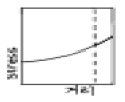
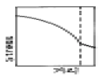
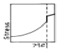
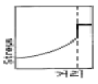
(정답률: 알수없음)
3과목: 발전로계통공학
41. 1g의 Co를 열중성자속 1013㎝-2.sec-1에서 300시간 중성자 조사하였다. 59Co(n,α)60Co의 반응 단면적은 19barn,코발트의 안정동위원소는 59Co뿐이며, 60Co의 반감기는 5.26년이다. 60Co의 생성량은?
- 0.12Ci
- 0.24Ci
- 0.36Ci
- 0.48Ci
(정답률: 알수없음)
42. 125I 1μCi의 무게는 몇 g인가? (단,125I의 반감기는 60d이다.)
- 5.7x10-12
- 7.5x10-11
- 5.7x10-11
- 7.5x10-12
(정답률: 알수없음)
43. 사용후 핵연료 내에 생성된 Cm242를 방사성 폐기물 처리 처분에서 중요시하는 이유가 될 수 없는 것은?
- 플루토늄 생성
- 대량의 감마선 발생
- 대량의 열 발생
- Ra226으로 붕괴
(정답률: 알수없음)
44. 인공원소만의 조합은?
- Np, Pu, Au
- At, Tc, Pm
- Mv, Fm, Sb
- Re, Sm, Bk
(정답률: 알수없음)
45. 235U 핵분열 생성물인 루테늄-106이 핵연료 재처리에서 중요한 이유는?
- 용매추출 과정에서 증발한다.
- 강한 감마에너지 발생으로 차폐문제가 있다.
- 수용액에서 여러가지 산화상태의 화합물들을 만든다.
- 중성자 독물이다.
(정답률: 알수없음)
46. 다음 중 방사성 요오드의 공중오염을 막기 위해 흡착제로 사용되는 것이 아닌 것은?
- 활성탄(activated charcoal)
- 질산은(AgNO3)
- 금속충전 제올라이트(metal impregnated zeolite)
- 소다 유리 휠터(soda glass filter)
(정답률: 알수없음)
47. 다음 원소중 transuranium에 속하지 않는 원소는?
- Pu
- Ac
- Am
- Cm
(정답률: 알수없음)
48. 우라늄 동위원소 235U의 농축공정에 대한 설명이다. 틀린 것은?
- 기체확산법은 동위원소의 질량차를 이용하여 농축한다.
- 레이저법은 동위원소 화합물의 흡수스펙트럼차를 이용한다.
- 공기역학법(노즐법)에서는 가벼운 원소가 반원형곡면벽 쪽을 따라 흐른다.
- 원심분리법에서 무거운 원소가 원통외부벽으로 이동한다.
(정답률: 알수없음)
49. 보기항의 밑줄친 원소가 추적자로서 이용되기에 가장 부적당한 것은? (단, 화살표 위의 문자는 붕괴방법을, 화살표 아래는 반감기를 나타낸다.)복원중 (정확한 보기내용을 아시는분께서는 오류 신고를 통하여 보기 내용 작성 부탁드립니다.)(문제 오류로 정답은 1번입니다.)
- 복원중
- 복원중
- 복원중
- 복원중
(정답률: 알수없음)
50. 38Cl을 포함하는 염화나트륨과 140Ba를 포함하는 질산바륨의 혼합용액에 황산을 가하여 가열할 때의 현상 중 맞는 것은?
- 38Cl은 휘발하고 140Ba은 용액중에 남는다.
- 38Cl은 휘발하고 140Ba은 생성하는 침전중에 들어간다.
- 38Cl,140Ba 모두 요액중에 남는다.
- 38Cl,140Ba 모두 침전중에 들어 간다.
(정답률: 알수없음)
51. 방사성 동위원소 24Na 1Ci가 있다. 이 방사성 동위원소의 무게는 얼마인가?(단, Na의 반감기는 15시간이다.)
- 1.15x10-7g
- 1.15x10-6g
- 3.19x10-7g
- 3.19x10-6g
(정답률: 알수없음)
52. 경수로 핵연료의 UO2 펠렛(pellet)의 용융온도는?
- 1800∼1900℃
- 2300∼2500℃
- 2700∼2900℃
- 3000∼3200℃
(정답률: 알수없음)
53. 카드뮴비(Cd Ratio)는?
- 열중성자에 의해서 생성된 방사능을 열중성자와 속중성자에 의해서 생성된 방사능으로 나눈 값
- 열중성자에 의해서 생성된 방사능을 속중성자에 의해서 생성된 방사능으로 나눈 값
- 속중성자에 의해서 생성된 방사능을 열중성자에 의해서 생성된 방사능으로 나눈 값
- 열중성자와 속중성자에 의해서 생성된 방사능을 속중성자에 의해서 생성된 방사능으로 나눈 값
(정답률: 알수없음)
54. 다음 중 추적자의 고고학적 이용에 쓰이는 동위원소는?
- 14C
- 14O
- 16N
- 17N
(정답률: 알수없음)
55. 모핵종 99Mo(반감기는 66시간)과 자핵종 99mTc(반감기는 6시간)이 방사평형상태에 있다. 99Mo의 방사능이 10μCi이면 99mTc의 방사능은 몇 μCi 이겠는가? (단, 모원소의 자원소로의 붕괴율은 100%라고 가정)
- 110μCi
- 100μCi
- 11μCi
- 10μCi
(정답률: 알수없음)
56. 137Cs 방사성핵종을 분리할 때 사용하는 일반적인 방사 분석법은?
- 용매추출법
- 전기분해농축법
- 발연질산법
- 염화백금산법
(정답률: 알수없음)
57. 천연 우라늄 중 우라늄 동위원소 235U는 약 얼마나 함유되어 있는가?
- 0.25%
- 0.82%
- 0.72%
- 3.2%
(정답률: 알수없음)
58. 밀킹법(milking method)은 다음과 같은 조작을 말한다. 올바른 것은?
- 모(母)핵종을 정제한 후 어떤 시간경과 후에 생성된 자(子)핵종을 분리해 내는 것
- 모,자핵종(母,子核種)의 공존상태에서 모(母)핵종만을 분리해 내는 것
- 모,자핵종(母,子核種)의 방사평형 상태에서 자(子)핵종을 분리한 다음 모(母)핵종을 정량하는 것
- 방사성 핵종으로부터 안정핵종을 추출해 내는 것
(정답률: 알수없음)
59. 1000MWe급 중수로의 가동율은 80%이고 핵분열 물질에서 나오는 열을 0.95MWd/g, 열발생율은 6800MWd/MT라면 천연 우라늄의 공급속도는? (단, 열에너지를 전기에너지로 바꾸는 효율은 30%이다.)
- 117.6㎏/day
- 147.0㎏/day
- 392.0㎏/day
- 490.2㎏/day
(정답률: 알수없음)
60. 경수로 핵연료 제조공정 순서를 알맞게 나타낸 것은?
- 정광(U3O8) - 변환(천연UF6) - 재변환(UO2) - 농축(UO3) - 성형가공(UO2)
- 정광(U3O8) - 변환(천연UF6) - 농축(UF6) - 재변환(UO2) - 성형가공(UO2)
- 정광(U3O8) - 재변환(UO2) - 농축(UO3) - 성형가공(UO2)
- 정광(U3O8) - 농축(UO3) - 변환(천연UF6) - 재변환(UO2) - 성형가공(UO2)
(정답률: 알수없음)
4과목: 원자로 안전과 운전
61. 핵임계 사고시 개인이 받은 피폭선량의 대부분은 중성자에 의한 것이다. 개인의 중성자 과피폭선량을 평가하는데 가장 적합한 방법은?
- 혈액중 백혈구 수
- 혈액중 적혈구 수
- 혈액중 철의 방사능
- 혈액중 나트륨의 방사능
(정답률: 알수없음)
62. 신체가 받는 γ선의 방사선 피폭선량을 측정하는데 가장 간편하게 사용되는 것은?
- GM형 측정기
- 전리형 포켓 선량계
- 화학 선량계
- 형광 선량계
(정답률: 알수없음)
63. CANDU형 원자로에서 비상용수공급계통(EWS)의 용수가 공급되는 경우가 아닌 것은?
- 급수계통 파손시 증기발생기로 공급
- 비상노심냉각계통 장기간 운전시 EWS배관에 연결하여 열수송계통으로 공급
- 비상노심냉각계통 열교환기에 기기냉각수(RSW) back up으로 공급
- 살수탱크에 용수보충시
(정답률: 알수없음)
64. 유효 반감기(Teff)는 방사학적 반감기(TR)와 생물학적 반감기(TB)간에 다음과 같은 관계가 있다. 맞는 것은?
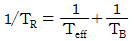
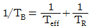
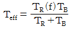
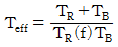
(정답률: 알수없음)
65. 다음 중 중대사고와 가장 관계가 적은 현상은?
- 증기폭발(steam explosion)
- 격납건물직접가열(direct containment heating)
- 수소폭발(hydrogen explosion)
- critical flow
(정답률: 알수없음)
66. 냉각재 배관 파단 사고시 핵연료 용융이 일어날 수 있게 하는 열에너지원에 대한 설명으로 알맞는 것은?
- 저장된 내부에너지는 물과 수증기의 상변화에 의한 잠열과 핵연료봉이 가진 비열이 대부분이다.
- 핵적 과도현상에 의한 열발생은 제어봉이 삽입되는 즉시 없어지므로 제어봉의 낙하시간 만이 중요하다.
- 붕괴열은 상당히 오랜 시간을 두고 영향을 미치는데 제어봉 낙하 직후에는 정상출력의 약 15%를 나타낸다.
- 화학반응에 의한 열에너지는 지르코늄이 물과 반응하여 발생되며 냉각재의 온도가 약 섭씨 2200도가 넘게 될 때 일어난다.
(정답률: 알수없음)
67. 일정한 중성자원으로부터 10cm 떨어진 곳에서 중성자속을 측정한 결과 104n/cm2.sec의 값을 얻었고 다음 중성자원과 계측기 사이에 10cm의 폭을 가진 납(Pb)을 넣은 후 측정한 결과는 7.4x104m/cm2.sec이었다. 이 때 차폐물의 가중계수(build-up factor)는? (단, 납의 밀도는 11.34g/cm3, 흡수계수는 0.518cm-1이다.)
- 0.95
- 0.34
- 2.4
- 7.4
(정답률: 알수없음)
68. 그림은 가압경수로(PWR) 원자력발전소 2차측 터빈 열역학 주기를 간단히 표시한 온도-엔트로피(T-S)선도이다. 이 중 저압터빈을 이용하는 부위는?
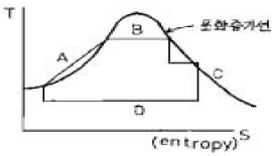
- A
- B
- C
- D
(정답률: 알수없음)
69. 유-튜브(U-tube)형 증기발생기에 대한 설명중 틀린 것은?
- 유-튜브의 재질은 인코넬이며 약 5,000개정도가 지지판에 의해 지지된다.
- 이차 냉각수는 일차측 냉각재에 의해 비등하여 증기가 되어 터빈으로 가지만 일부는 하향 통로에서 급수와 함께 합쳐져 재순환 된다.
- 어떤 사고에도 원자로심을 냉각시켜야 하므로 주급수펌프는 항상 작동하도록 설계되어 있다.
- 증기발생기에는 많은 방사선조사가 있으므로 보수 유지작업에 어려움이 있다.
(정답률: 알수없음)
70. 냉각제 상실사고에 대한 설계기준 중 틀린 것은?
- 핵연료봉 피복재의 첨두온도가 2200℉보다 작아야 한다
- 핵비등이탈율이 1.3 보다 작아야 한다.
- 피복재 산화는 17% 이하라야 한다.
- 물이나 증기와 화학반응을 일으키는 피복재량은 전체 피복재의 1% 미만이어야 한다.
(정답률: 알수없음)
71. 평준화 가격(levelized cost)에 대한 잘못된 설명은?
- 현재 가법(present worth method)으로 구한다.
- 해마다 변동하는 전력단가와 자본비율을 발전소 운전 수명중 평균하여 구한 대표값이다.
- 발전소 운전수명중 고정하여 부과한 경우와 실제로 해마다 부과하는 회계상의 수치계산이 동일시되는 발전단가이다.
- 매년 발전단가를 평균한 값이다.
(정답률: 알수없음)
72. 원자로에 이용되는 제어봉 중에서 반응도의 장기적 변화 취급용으로 설치되는 것은?
- 안전 제어봉(safety rod)
- 미세 제어봉(regulating rod)
- 조 제어봉(shim rod)
- 미세 제어봉과 조 제어봉
(정답률: 알수없음)
73. 다음 방사선차폐 물질 중 감마선(γ선) 피폭에 의하여 중성자발생의 문제가 없는 것은?
- 규소(Si)
- 중수소(2H)
- 베릴륨(9Be)
- 탄소(C)
(정답률: 알수없음)
74. 고리원자력 발전소의 노심에서 생성되는 핵분열에너지는 대략 1,700㎿이다. 이 에너지는 반경 0.2인치(inch) 높이가 144인치인 긴 UO2 연료봉 주위를 흐르는 냉각수에 의해 운반된다. 만일 고리노심의 평균 열류속(average heat flux)이 0.68㎿/hr.ft2이라면 노심에너지를 운반해 내기 위해 소요되는 연료봉수(개)는?
- 약 1.00×104
- 약 1.52×104
- 약 1.82×104
- 약 2.02×104
(정답률: 알수없음)
75. 경수로 원자로 냉각재 계통으로부터 소량의 누설이 발생한다면 이를 판단할 수 있는 방법 중 옳지 않은 것은?
- 격납용기 내부 방사능 준위가 높게 지시
- 격납용기 배수조 수위 증가
- 가압기 수위 증가 또는 충전 유량 감소
- 격납용기 내부의 습도 상승
(정답률: 알수없음)
76. 인체의 조혈장기에 방사선 피폭을 받았을 경우 가장 민감한 것은?
- 적혈구
- 백혈구
- 혈소판
- 임파구
(정답률: 알수없음)
77. 다음 중 원자로 제어를 위해 매우 중요한 인자는?
- 즉발 γ선
- 지발 γ선
- 즉발중성자
- 지발중성자
(정답률: 알수없음)
78. 방사선 사고 검출용 기기의 특성을 가장 잘 설명한 것은?
- 방향의 의존성이 커야 한다.
- 에너지 의존성이 커야 한다.
- 측정감도가 좋아야 한다.
- 장기간 포화되지 않고 일정한 작동을 할 수 있어야 한다.
(정답률: 알수없음)
79. 가압 경수로(PWR)에서 주요기기의 보호에 목적을 둔 강제 정지 조건은?
- 증기유량의 증가
- 증기발생기 고수위
- 과출력 漬T
- 주급수유량의 감소
(정답률: 알수없음)
80. 다음 중 핵연료 주기 비용에 고려하지 않는 것은?
- 사용후 연료 수송비
- 대금 결제 시기
- 할인률
- 감가상각률
(정답률: 알수없음)
5과목: 방사선이용 및 보건물리
81. Dead time 250μsec인 G-M계수관으로 15100cpm의 계수율을 얻었다. Dead time이 없는 진계수율(true counting rate)은 약 얼마인가?
- 16,100cpm
- 18,100cpm
- 14,100cpm
- 20,100cpm
(정답률: 알수없음)
82. 일반적인 반도체 검출기의 특성을 나열한 것으로 옳지 않은 것은?
- 에너지 분해능이 좋다.
- 출력펄스의 상승시간(rise time)이 늦다.
- 넓은 에너지 영역에 걸쳐 반응이 선형적이다.
- 크기가 작고 검출기 구조선택이 자유롭다.
(정답률: 알수없음)
83. 미량의 방사능을 측정하는 기술로서 잘못된 것은?
- 자연 계수율을 줄이기 위해 차폐를 잘해야 한다.
- 백 그라운드 때문에 계수 시간을 짧게 해야 한다.
- 역동시 계수관을 사용한다.
- 시료를 농축한다.
(정답률: 알수없음)
84. 다음 계수기(counter)중에서 Plateau 특성을 보이지 않는 것은?
- BF3 - counter
- Proportional counter
- G-M counter
- Scintillation counter
(정답률: 알수없음)
85. 단색 γ선의 파고분포곡선에 나타나는 광전피크(peak)에 대한 설명중 틀리는 것은?
- peak 위치는 γ선의 에너지에 비례한다.
- 가우스 분포를 한다.
- 분해능에 따라 폭이 다르다.
- 높이는 분해능에는 무관하다.
(정답률: 알수없음)
86. 1MeV의 감마선에 대한 납(비중 11.3g/㎝3)의 질량 감쇠계수가 0.0703㎝2/g이다. 선 감쇠계수는 얼마인가?
- 0.794㎝-1
- 7.94㎝-1
- 0.0794㎝-1
- 0.00794㎝-1
(정답률: 알수없음)
87. X-선과 γ-선에 관한 설명 중 맞는 것은?
- X선은 전자의 천이에 의해, γ선은 핵의 천이에 의해 발생된다.
- γ선은 전자의 천이에 의해, X선은 핵의 천이에 의해 발생된다.
- X선은 하전입자의 감속에 의해, γ선은 전자의 천이에 의해 발생된다.
- γ선은 하전입자의 감속에 의해, X선은 전자의 천이에 의해 발생된다.
(정답률: 알수없음)
88. 다음 중 열중성자의 흡수가 현저하게 큰 것은?
- 철
- 구리
- 카드뮴
- 중수(D2O)
(정답률: 알수없음)
89. 다음 계측기중 측정용도가 다른 것은?
- BF3 계수관
- 3He 계수관
- 이온함 탐사계
- 핵분열 계수관
(정답률: 알수없음)
90. G-M 계수관에 관한 설명중 잘못된 것은?
- 입사 입자의 에너지 판단이 간단하다.
- 출력 펄스가 커서 외부 증폭이 거의 필요없다.
- 출력 펄스 파고가 1차 이온대의 수와 무관하다.
- 입사 입자의 종류를 구별할 수 없다.
(정답률: 알수없음)
91. BGO 신틸레이터의 특성으로 올바른 것은?
- 밀도가 작다.
- 실효원자 번호가 작다.
- 잔광시간이 길다.
- 흡습성이 없다.
(정답률: 알수없음)
92. Scaler는 다음 중 어느 회로를 이용한 것인가?
- Schmitt회로
- Binary회로
- 적분회로
- 증폭회로
(정답률: 알수없음)
93. 검출기에 임피던스가 낮은 회로나 긴 케이블을 직접 연결하면 펄스 파형 자체가 우그러지는 현상이 발생하는데 이 것을 방지하기 위하여 검출기에 바로 접속시켜 사용하는 전자회로는?
- 바이어스 증폭기(biased amplifier)
- 주 증폭기(main amplifier)
- 가산 증폭기(sum-amplifier)
- 전치 증폭기(pre-amplifier)
(정답률: 알수없음)
94. 다음 중 중성자 선원은?
- 60Co
- 147Pm
- 90Sr-90Y
- 241Am-9Be
(정답률: 알수없음)
95. 조사선량 측정기 중 기준기기로서 비교 교정하지 않고 절대측정의 원리를 적용할 수 있는 것은?
- 전리함식 선량계
- 열형광 선량계
- G-M관식 선량계
- NaI신틸레이션 선량계
(정답률: 알수없음)
96. P-N 접합 검출기의 감손영역(Depletion region) 두께가 엷을수록 어떤 장점이 있는가?
- 양성자 측정에 유리해진다.
- α-입자 측정에 유리해진다.
- 분해능이 좋아진다.
- 검출기의 안정성이 증진된다.
(정답률: 알수없음)
97. 보기 ① - ④의 내용 중 맞는 설명의 조합은?
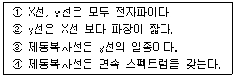
- ①과 ②
- ①과 ③
- ①과 ④
- ②과 ③
(정답률: 알수없음)
98. γ선 보상형 중성자 측정용 붕소전리함을 바르게 설명한 것은?
- 혼합 방사선장에서 속중성자를 측정할 수 있게 되어있다.
- γ선에 의한 전리전류를 증폭시켜 잡음의 기미를 무시 하고 있다.
- 중성자와 붕소와의 핵반응을 이용하여 α입자의 전리작용을 이용하고 있다.
- 반조양자의 반사체로서 파라핀 등 함수 소기체를 사용하고 있다.
(정답률: 알수없음)
99. BF3 중성자 검출기의 동작원리가 되는 핵반응은?
- Be10(n,α)Li9
- B10(n,P)Be10
- B10(n,α)Li7
- F17(n,P)Ne20
(정답률: 알수없음)
100. 전치증폭기의 출력신호는 15mV이다. 이것을 증폭하기 위하여 주증폭기에 설정하는 증폭도(Gain)로서 부적당한 것은? (단, 주증폭기의 최대 출력신호는 10V이다.)
- 1,000
- 500
- 100
- 50
(정답률: 알수없음)